<!DOCTYPE lake>
<h2 data-lake-id="sLR7q" id="sLR7q"><span data-lake-id="u304d7573" id="u304d7573">学习目标</span></h2><ol list="ua6b82ba0"><li data-lake-id="u2847fd67" fid="uc36661d3" id="u2847fd67"><span data-lake-id="ub8a72328" id="ub8a72328">了解标准库来源</span></li><li data-lake-id="uc5666a31" fid="uc36661d3" id="uc5666a31"><span data-lake-id="u0d2f5849" id="u0d2f5849">熟悉模板搭建流程</span></li><li data-lake-id="u981c3397" fid="uc36661d3" id="u981c3397"><span data-lake-id="u2ec8d009" id="u2ec8d009">掌握在已有模板基础下进行开发</span></li></ol><h2 data-lake-id="igi83" id="igi83"><span data-lake-id="ua528de01" id="ua528de01">学习内容</span></h2><h3 data-lake-id="AI5wh" id="AI5wh"><span data-lake-id="uea454c62" id="uea454c62">Keil开发环境配置</span></h3><h4 data-lake-id="DsH6B" id="DsH6B"><span data-lake-id="u48d697e7" id="u48d697e7">方式一：离线安装（推荐）</span></h4><p data-lake-id="uc7050f50" id="uc7050f50"><span data-lake-id="u242f22e8" id="u242f22e8">通常，我们可以在Arm为Keil准备的</span><a data-lake-id="ud582c87b" href="https://www.keil.arm.com/devices/" id="ud582c87b" rel="noopener noreferrer" target="_blank"><span data-lake-id="u1a94be17" id="u1a94be17">官方网站</span></a><span data-lake-id="u3ec8c90b" id="u3ec8c90b">搜索所需的所有ARM相关开发包。</span></p><ol list="u757e2a11"><li data-lake-id="u20f9cd7a" fid="u3aebcd57" id="u20f9cd7a"><span data-lake-id="u5d8256b3" id="u5d8256b3">搜索：</span><code data-lake-id="u06cd66b3" id="u06cd66b3"><span data-lake-id="u11c27fa6" id="u11c27fa6">STM32F407</span></code><a data-lake-id="uda3a3022" href="https://www.keil.arm.com/devices/?q=STM32F407" id="uda3a3022" rel="noopener noreferrer" target="_blank"><span data-lake-id="u77325cca" id="u77325cca">https://www.keil.arm.com/devices/?q=STM32F407</span></a><span data-lake-id="u4aa22de0" id="u4aa22de0">。点开</span><code data-lake-id="ud2e83c3d" id="ud2e83c3d"><span data-lake-id="u94b60930" id="u94b60930">STM32F407VETx</span></code></li></ol><p data-lake-id="u630d3988" id="u630d3988" style="text-indent: 2em">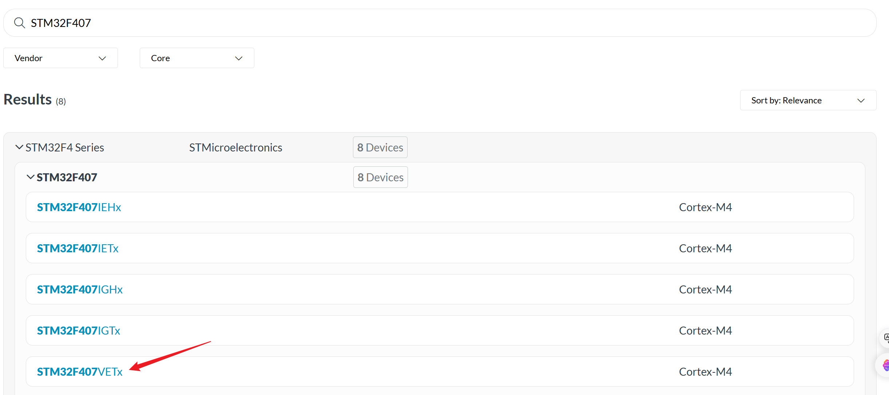</p><p data-lake-id="ua5bb45eb" id="ua5bb45eb"><br/></p><ol list="uadf3b766" start="2"><li data-lake-id="u60afcf25" fid="uec38bc78" id="u60afcf25"><span data-lake-id="u1d36b7c2" id="u1d36b7c2">选择：</span><code data-lake-id="u53305cd7" id="u53305cd7"><span data-lake-id="u03c1e4a2" id="u03c1e4a2">CMSISPack</span></code><span data-lake-id="u7f771847" id="u7f771847"> 下的 </span><code data-lake-id="u136ce838" id="u136ce838"><span data-lake-id="u2219f913" id="u2219f913">STM32F4xx_DFP</span></code><span data-lake-id="u6a7b1e7b" id="u6a7b1e7b">会发现STM32F4xx用的都是同一个开发包</span></li></ol><p data-lake-id="u24cfaca7" id="u24cfaca7">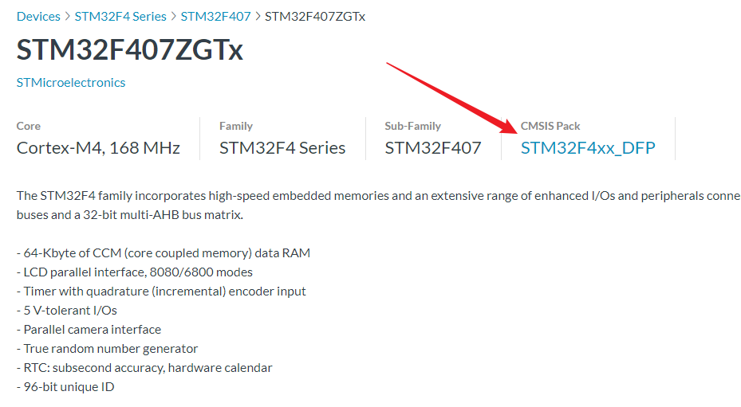</p><ol list="u15292865" start="3"><li data-lake-id="u2808b47e" fid="uc823a0e6" id="u2808b47e"><span data-lake-id="u4c538b41" id="u4c538b41">继续点击下载即可：</span><a data-lake-id="u9154084b" href="https://www.keil.com/pack/Keil.STM32F4xx_DFP.2.17.1.pack" id="u9154084b" rel="noopener noreferrer" target="_blank"><span data-lake-id="u71cf77fd" id="u71cf77fd">Download Recommended Pack</span></a><span data-lake-id="ub851715c" id="ub851715c"> </span></li></ol><p data-lake-id="ud7331502" id="ud7331502">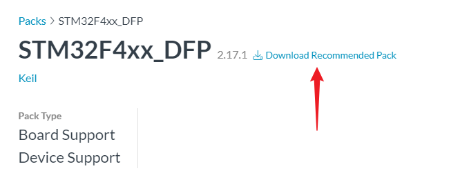</p><p data-lake-id="u89a2700e" id="u89a2700e"><span data-lake-id="u025d125f" id="u025d125f">也可以在这里下载: </span><a class="yuque-card-link" href="../../_assets/20f418bbbd21511ced459d18.zip">Keil.STM32F4xx_DFP.3.1.1.zip</a></p><h4 data-lake-id="buvVg" id="buvVg"><span data-lake-id="uf49d3ca2" id="uf49d3ca2">方式二：在线安装</span></h4><p data-lake-id="u129f9e1b" id="u129f9e1b">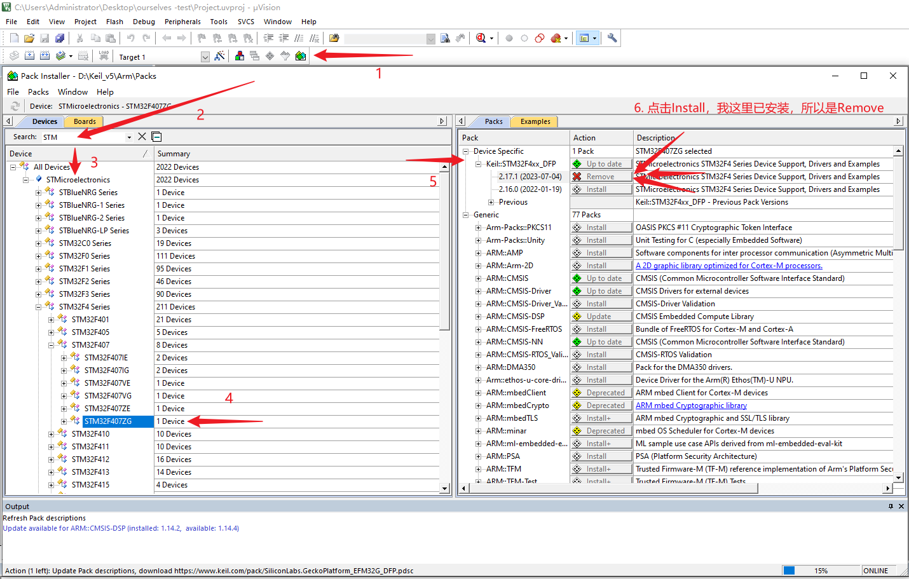</p><p data-lake-id="ueaeaa308" id="ueaeaa308"><br/></p><h3 data-lake-id="AOepz" id="AOepz"><span data-lake-id="ue280e6f4" id="ue280e6f4">文档获取</span></h3><h4 data-lake-id="Wptgy" id="Wptgy"><span data-lake-id="u9d77e29a" id="u9d77e29a">参考手册</span></h4><p data-lake-id="u90b1b1c5" id="u90b1b1c5"><a data-lake-id="ua04c7dc8" href="https://www.st.com/content/st_com/zh/search.html#q=stm32f407-t=resources-page=1" id="ua04c7dc8" rel="noopener noreferrer" target="_blank"><span data-lake-id="u93ddc9e5" id="u93ddc9e5">https://www.st.com/content/st_com/zh/search.html#q=stm32f407-t=resources-page=1</span></a></p><h4 data-lake-id="CcWyc" id="CcWyc"><span data-lake-id="ua5ff4e7a" id="ua5ff4e7a">数据手册</span></h4><p data-lake-id="u0263c194" id="u0263c194"><a data-lake-id="u6e218daa" href="https://www.st.com.cn/zh/microcontrollers-microprocessors/stm32f407ve.html" id="u6e218daa" rel="noopener noreferrer" target="_blank"><span data-lake-id="u824e4734" id="u824e4734">https://www.st.com.cn/zh/microcontrollers-microprocessors/stm32f407ve.html</span></a></p><h3 data-lake-id="vEGPs" id="vEGPs"><span data-lake-id="u160e55ad" id="u160e55ad">标准外设库获取</span></h3><p data-lake-id="uaa538885" id="uaa538885"><span class="lake-fontsize-12" data-lake-id="u8f3b84bb" id="u8f3b84bb" style="color: rgb(51, 51, 51)">标准外设库获取我们可以从官网进行下载。</span></p><p data-lake-id="u57ec9483" id="u57ec9483"><span class="lake-fontsize-12" data-lake-id="u2b0b0105" id="u2b0b0105" style="color: rgb(51, 51, 51)">搜索方式:</span></p><p data-lake-id="uaab60ea6" id="uaab60ea6">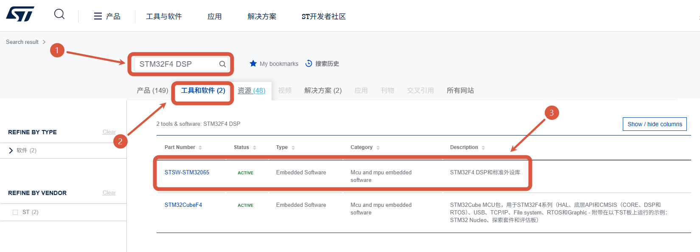</p><p data-lake-id="u88dfa4b8" id="u88dfa4b8"><span class="lake-fontsize-12" data-lake-id="u2dd70aac" id="u2dd70aac" style="color: rgb(51, 51, 51)">下载链接：</span><a data-lake-id="u559c611f" href="https://www.st.com/zh/embedded-software/stsw-stm32065.html#get-software" id="u559c611f" rel="noopener noreferrer" target="_blank"><span data-lake-id="u4ed739c2" id="u4ed739c2">https://www.st.com/zh/embedded-software/stsw-stm32065.html#get-software</span></a></p><p data-lake-id="u5d580c98" id="u5d580c98">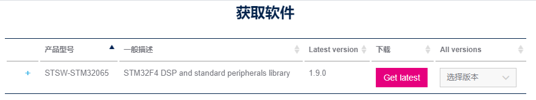</p><p data-lake-id="u92a3f25f" id="u92a3f25f"><br/></p><p data-lake-id="ufb19ba01" id="ufb19ba01"><span class="lake-fontsize-12" data-lake-id="uafdfca23" id="uafdfca23" style="color: rgb(51, 51, 51)">下载完成后，进行解压，解压后目录如图</span></p><p data-lake-id="ua75d47c0" id="ua75d47c0">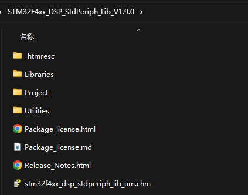</p><h3 data-lake-id="n0qyy" id="n0qyy"><span data-lake-id="u3bc5d50d" id="u3bc5d50d">标准外设库目录介绍</span></h3><p data-lake-id="u5dc1ad76" id="u5dc1ad76"><span class="lake-fontsize-12" data-lake-id="u0e178115" id="u0e178115" style="color: rgb(51, 51, 51)">打开下载的 STM32F4xx 标准固件库，里面的目录如图</span></p><ul list="ue0312010"><li data-lake-id="u477d9793" fid="u2d220606" id="u477d9793"><span class="lake-fontsize-12" data-lake-id="ucfc488a9" id="ucfc488a9" style="color: rgb(51, 51, 51)">Project：此文件夹包含的是官方编写的示例代码，涉及芯片的大部分功能。还包含了模板代码。</span></li><li data-lake-id="ubd0d5e40" fid="u2d220606" id="ubd0d5e40"><span class="lake-fontsize-12" data-lake-id="u26dd67a4" id="u26dd67a4" style="color: rgb(51, 51, 51)">Libraries：此文件夹里面有 2个文件夹，包含 CMSIS和固件库，方便用户开发使用。</span></li><li data-lake-id="ub8aa21c3" fid="u2d220606" id="ub8aa21c3"><span class="lake-fontsize-12" data-lake-id="u8d1de974" id="u8d1de974" style="color: rgb(51, 51, 51)">Utilities：此文件夹包含一些第三方组件和 STM32 配套的开发板文件。</span></li></ul><h4 data-lake-id="Nm5EN" id="Nm5EN"><span data-lake-id="u10900f8d" id="u10900f8d" style="color: rgb(51, 51, 51)">Libraries</span></h4><p data-lake-id="u6c5fc8f1" id="u6c5fc8f1">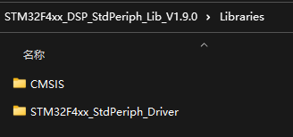</p><ul list="u482982ca"><li data-lake-id="uff0edd67" fid="u065c6eda" id="uff0edd67"><span class="lake-fontsize-12" data-lake-id="u627ac753" id="u627ac753" style="color: rgb(51, 51, 51)">CMSIS：微控制器软件接口标准(CMSIS：Cortex Microcontroller Software Interface Standard) 是Cortex-M 处理器系列的与供应商无关的硬件抽象层。</span><span class="lake-fontsize-12" data-lake-id="u34540f41" id="u34540f41" style="color: rgb(77, 77, 77)">规定了处理器内核与外设的接口，统一了内核访问外设寄存器的方法</span></li></ul><blockquote data-lake-id="u4287ae10" id="u4287ae10" style="padding-left: 2em"><p data-lake-id="ufcae0ee2" id="ufcae0ee2"><span class="lake-fontsize-12" data-lake-id="uc53d8476" id="uc53d8476" style="color: rgb(77, 77, 77)">POSIX（Portable Operating System Interface of UNIX），可移植操作系统接口，它定义了操作系统应该为应用程序提供的接口</span></p></blockquote><ul list="u65d7a2aa"><li data-lake-id="uab7c8bc5" fid="u33b4b0ec" id="uab7c8bc5"><span class="lake-fontsize-12" data-lake-id="u16340548" id="u16340548" style="color: rgb(51, 51, 51)">STM32F4xx_StdPeriph_Driver: 从名称也可以看出，这个是 STM32F4 系列的标准外设库，存放一些封装了寄存器的库函数，我们后面编程也是依赖于这个库进行开发。</span></li></ul><h4 data-lake-id="djwnQ" id="djwnQ"><span data-lake-id="u41046402" id="u41046402" style="color: rgb(51, 51, 51)"> Libraries/CMSIS</span></h4><p data-lake-id="ua394fc9b" id="ua394fc9b">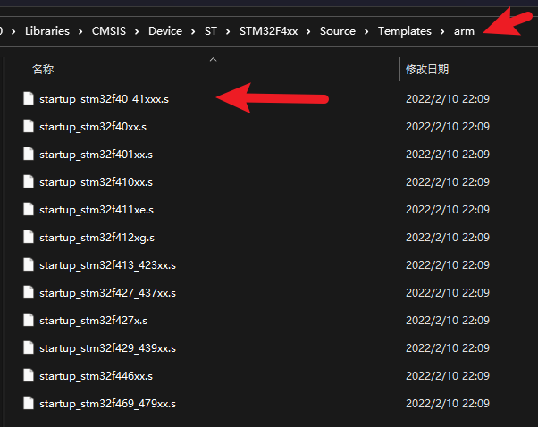</p><p data-lake-id="ucf9b716f" id="ucf9b716f">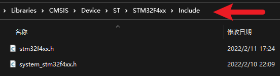</p><p data-lake-id="u5aa469c4" id="u5aa469c4"><span data-lake-id="u269521d9" id="u269521d9">内部主要是汇编代码，这个是直接和芯片进行交互的，每种不同的芯片需要配套不同的cmsis接口实现。</span></p><h4 data-lake-id="TUx8f" id="TUx8f"><span class="lake-fontsize-12" data-lake-id="ucbd418d7" id="ucbd418d7" style="color: rgb(51, 51, 51)">Libraries/STM32F4xx_StdPeriph_Driver</span></h4><p data-lake-id="u6022679c" id="u6022679c">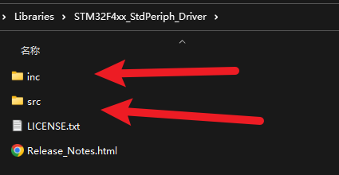</p><p data-lake-id="uc38b4612" id="uc38b4612"><span class="lake-fontsize-12" data-lake-id="u7e3d5d46" id="u7e3d5d46" style="color: rgb(51, 51, 51)">这个里面都是一些外设库文件，包含 STM32F4 芯片的绝大部分功能，包含 ADC，CAN，SDIO，SPI 等。</span></p><p data-lake-id="u25e4b7f2" id="u25e4b7f2"><span class="lake-fontsize-12" data-lake-id="u73e95832" id="u73e95832" style="color: rgb(51, 51, 51)">这个库是嫁接在cmsis的基础上的，F4系列不同的芯片可用公用这一套实现。</span></p><p data-lake-id="u6b05482f" id="u6b05482f"><span class="lake-fontsize-12" data-lake-id="u1375377f" id="u1375377f" style="color: rgb(51, 51, 51)">​</span><br/></p><h3 data-lake-id="x5mOA" id="x5mOA"><span data-lake-id="u2944e572" id="u2944e572" style="color: rgb(51, 51, 51)">项目模板搭建</span></h3><h4 data-lake-id="FWUkN" id="FWUkN"><span data-lake-id="u77532026" id="u77532026">前期准备</span></h4><ul class="lake-list" list="ud7233bc3"><li class="lake-list-node lake-list-task" data-lake-id="ue82fc774" fid="uf6f9b119" id="ue82fc774" version="1681806378388"><span class="yuque-card-unsupported">[checkbox]</span><span class="lake-fontsize-12" data-lake-id="ua6089d8a" id="ua6089d8a" style="color: rgb(51, 51, 51)">已经安装好 Keil 软件</span></li><li class="lake-list-node lake-list-task" data-lake-id="ud16bfcb9" fid="uf6f9b119" id="ud16bfcb9" version="1681806385717"><span class="yuque-card-unsupported">[checkbox]</span><span class="lake-fontsize-12" data-lake-id="ue830bddd" id="ue830bddd" style="color: rgb(51, 51, 51)">已经安装好 STM32F4xx 的 Pack 包</span></li><li class="lake-list-node lake-list-task" data-lake-id="u06d4d066" fid="uf6f9b119" id="u06d4d066" version="1681806386243"><span class="yuque-card-unsupported">[checkbox]</span><span class="lake-fontsize-12" data-lake-id="uf86b8fa9" id="uf86b8fa9" style="color: rgb(51, 51, 51)">已经下载好 STM32F4xx 标准固件库</span></li></ul><h4 data-lake-id="TUwcZ" id="TUwcZ"><span data-lake-id="u3ab97c91" id="u3ab97c91">工程文件目录创建</span></h4><ul list="uf8c2fb14"><li data-lake-id="u203649e6" fid="u443e2ae4" id="u203649e6"><span class="lake-fontsize-12" data-lake-id="u7ed8afd6" id="u7ed8afd6" style="color: rgb(51, 51, 51)"> Project:放工程文件，编译文件等。</span></li><li data-lake-id="u2466decf" fid="u443e2ae4" id="u2466decf"><span class="lake-fontsize-12" data-lake-id="u56879b6a" id="u56879b6a" style="color: rgb(51, 51, 51)"> Firmware：放 ARM 内核文件，标准外设库文件等。</span></li><li data-lake-id="u394d24be" fid="u443e2ae4" id="u394d24be"><span class="lake-fontsize-12" data-lake-id="ub535cb23" id="ub535cb23" style="color: rgb(51, 51, 51)"> Hardware：放开发板的硬件驱动文件。</span></li><li data-lake-id="ud9ccf591" fid="u443e2ae4" id="ud9ccf591"><span class="lake-fontsize-12" data-lake-id="ueadfb4ce" id="ueadfb4ce" style="color: rgb(51, 51, 51)"> User：放 main 函数，stm32f4xx_it 文件，systick 文件。</span></li><li data-lake-id="ua799a013" fid="u443e2ae4" id="ua799a013"><span class="lake-fontsize-12" data-lake-id="u083e202f" id="u083e202f" style="color: rgb(51, 51, 51)"> Doc: 放 readme.txt 文件，工程说明文件。</span></li></ul><p data-lake-id="ud98ad810" id="ud98ad810">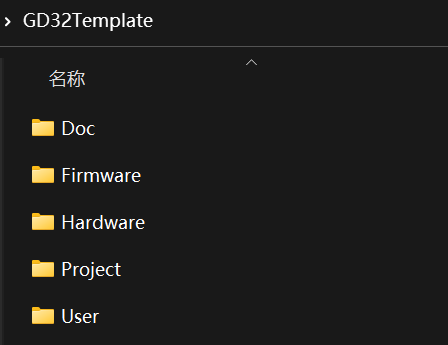</p><h4 data-lake-id="hrK4K" id="hrK4K"><span data-lake-id="u33997f3e" id="u33997f3e">固件库移植</span></h4><p data-lake-id="uab96fcb5" id="uab96fcb5"><span class="lake-fontsize-12" data-lake-id="u9d2839d2" id="u9d2839d2" style="color: rgb(51, 51, 51)">找到我们的固件库的下载目录，将</span><code data-lake-id="u957d0b9b" id="u957d0b9b"><span class="lake-fontsize-12" data-lake-id="u752f4a91" id="u752f4a91" style="color: rgb(51, 51, 51)">STM32F4xx_DSP_StdPeriph_Lib_V1.9.0\Libraries</span></code><span class="lake-fontsize-12" data-lake-id="u40f46e24" id="u40f46e24" style="color: rgb(51, 51, 51)"> 文件夹下的内容全部拷贝到新建目录的Firmware 下</span></p><p data-lake-id="uce72a518" id="uce72a518"></p><h4 data-lake-id="kDzAj" id="kDzAj"><span data-lake-id="u64bea41f" id="u64bea41f">程序入口移植</span></h4><p data-lake-id="ueb9b9636" id="ueb9b9636"><span class="lake-fontsize-12" data-lake-id="ua6008d4f" id="ua6008d4f" style="color: rgb(51, 51, 51)">找到我们的固件库的下载目录，将</span><code data-lake-id="u23be9be4" id="u23be9be4"><span class="lake-fontsize-12" data-lake-id="u7d667546" id="u7d667546" style="color: rgb(51, 51, 51)">STM32F4xx_DSP_StdPeriph_Lib_V1.9.0/Project/STM32F4xx_StdPeriph_Templates</span></code><span class="lake-fontsize-12" data-lake-id="u5d984939" id="u5d984939" style="color: rgb(51, 51, 51)">中的如下文件进行拷贝：</span></p><p data-lake-id="u7051c475" id="u7051c475">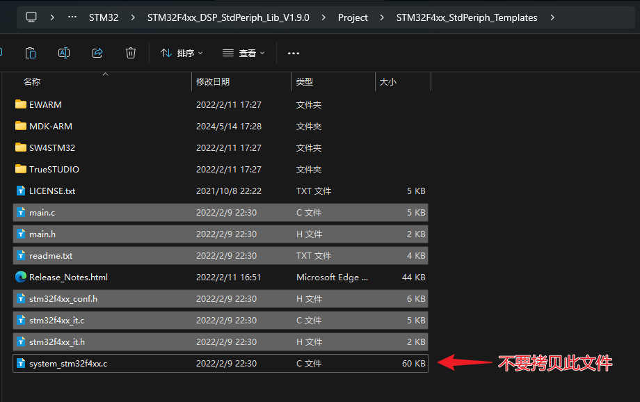</p><p data-lake-id="u61a94cec" id="u61a94cec"><span class="lake-fontsize-12" data-lake-id="ufb9533d6" id="ufb9533d6">将文件拷贝到工程目录的</span><code data-lake-id="u72c9f130" id="u72c9f130"><span class="lake-fontsize-12" data-lake-id="ua1a38ee9" id="ua1a38ee9">User</span></code><span class="lake-fontsize-12" data-lake-id="u7fd15dc1" id="u7fd15dc1">目录中</span></p><p data-lake-id="uc226a2d5" id="uc226a2d5">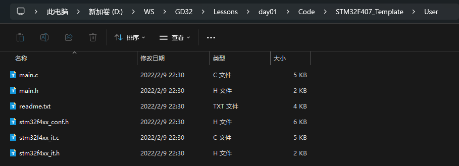</p><h3 data-lake-id="qjAi2" id="qjAi2"><span data-lake-id="u6370ce0d" id="u6370ce0d">Keil工程创建</span></h3><p data-lake-id="udd8cf36b" id="udd8cf36b"><span class="lake-fontsize-12" data-lake-id="u8edab6ed" id="u8edab6ed" style="color: rgb(51, 51, 51)">打开 keil，点击最上面的 Project 选项卡，选择 New uVision Project 选项新建一个工程</span></p><p data-lake-id="u57a73f43" id="u57a73f43">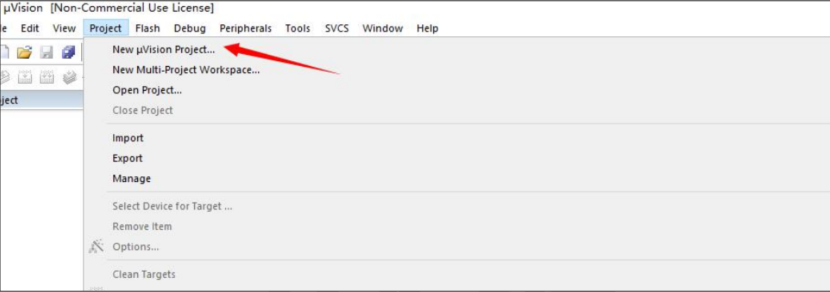</p><p data-lake-id="u85bcc71a" id="u85bcc71a"><span class="lake-fontsize-12" data-lake-id="u29239d27" id="u29239d27" style="color: rgb(51, 51, 51)">选择保存路径为我们刚才创建的文件夹下的 Project，文件名为 STM32Template，然后点击保存</span></p><p data-lake-id="u4bffe46c" id="u4bffe46c">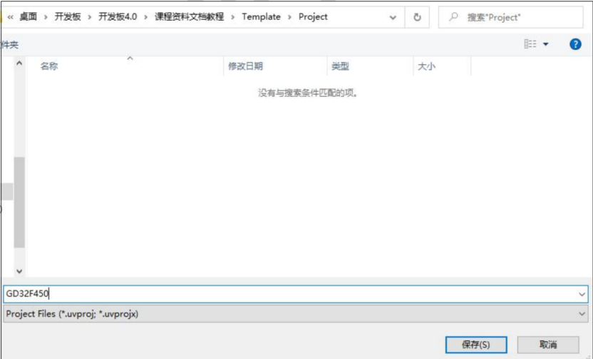</p><h4 data-lake-id="qjhaV" id="qjhaV"><span data-lake-id="uee14be12" id="uee14be12">设备选择</span></h4><p data-lake-id="uc69d4e78" id="uc69d4e78"><span class="lake-fontsize-12" data-lake-id="u3381e1cf" id="u3381e1cf" style="color: rgb(51, 51, 51)">点击保存之后，弹出工程配置窗口，选择所需芯片，这里依次选择GigaDevice-&gt;GD32F4xx Series-&gt;GD32F407-&gt;GD32F407VE，然后点击 ok</span></p><p data-lake-id="u0294cc33" id="u0294cc33">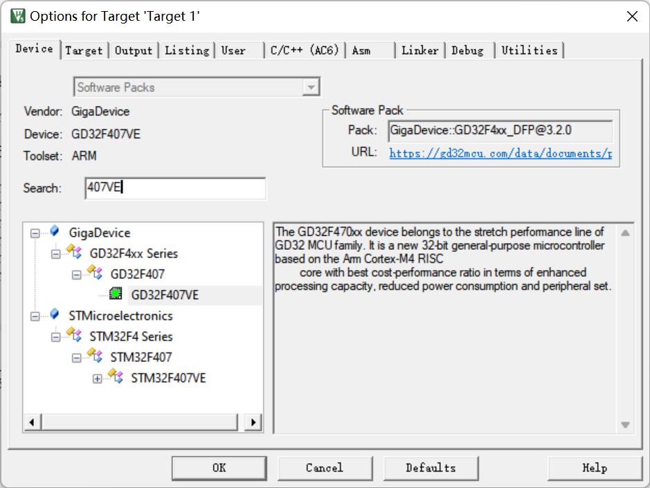</p><p data-lake-id="u25537c23" id="u25537c23"><span class="lake-fontsize-12" data-lake-id="ud3abdfa0" id="ud3abdfa0" style="color: rgb(51, 51, 51)">确定所需芯片之后，弹出 RTE 的环境配置对话框，选择工程所需的组件，不用配置,点击取消</span></p><p data-lake-id="u9ff54731" id="u9ff54731">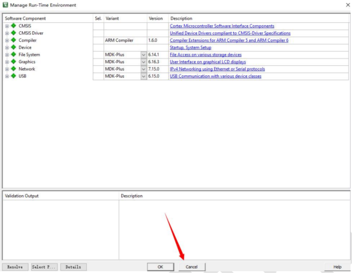</p><h4 data-lake-id="jofNE" id="jofNE"><span data-lake-id="ua19e5916" id="ua19e5916">keil分组创建</span></h4><p data-lake-id="uc0923c03" id="uc0923c03"><span class="lake-fontsize-12" data-lake-id="u2b1e5536" id="u2b1e5536" style="color: rgb(51, 51, 51)">我们的工程已经创建完成，但是可以看到工程里面还没有文件，我们可以创建一些分组和添加一些文件。</span></p><p data-lake-id="u51d29a4e" id="u51d29a4e"><span class="lake-fontsize-12" data-lake-id="u664468e2" id="u664468e2" style="color: rgb(51, 51, 51)">我们打开管理工程项去创建分组和添加文件</span></p><p data-lake-id="u9354e184" id="u9354e184">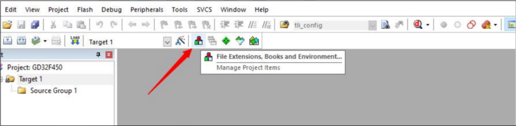</p><p data-lake-id="uce5ad0d4" id="uce5ad0d4"><span data-lake-id="ucce21362" id="ucce21362">首先我们新建分组：</span></p><ul list="ufdd4a8e6"><li data-lake-id="u6cd6eac9" fid="u7a45c134" id="u6cd6eac9"><span data-lake-id="u4032e645" id="u4032e645">User</span></li><li data-lake-id="u5f31e7b0" fid="u7a45c134" id="u5f31e7b0"><span data-lake-id="u3ef815b9" id="u3ef815b9">CMSIS</span></li><li data-lake-id="u72a02c13" fid="u7a45c134" id="u72a02c13"><span data-lake-id="uabfcc6f6" id="uabfcc6f6">Firmware</span></li><li data-lake-id="u7491e539" fid="u7a45c134" id="u7491e539"><span data-lake-id="ud7fedf75" id="ud7fedf75">Hardware</span></li><li data-lake-id="u2f0999e1" fid="u7a45c134" id="u2f0999e1"><span data-lake-id="u905ae0fc" id="u905ae0fc">Doc</span></li></ul><p data-lake-id="u477bd021" id="u477bd021">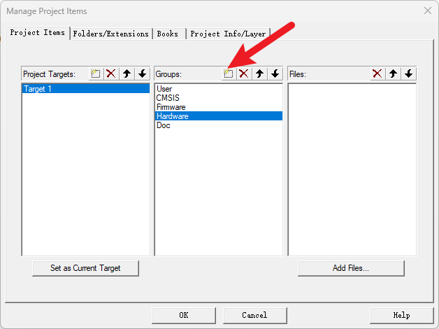</p><h4 data-lake-id="Cp5z0" id="Cp5z0"><span data-lake-id="ub10c7f7b" id="ub10c7f7b">User分组添加</span></h4><p data-lake-id="uf3ea98a0" id="uf3ea98a0">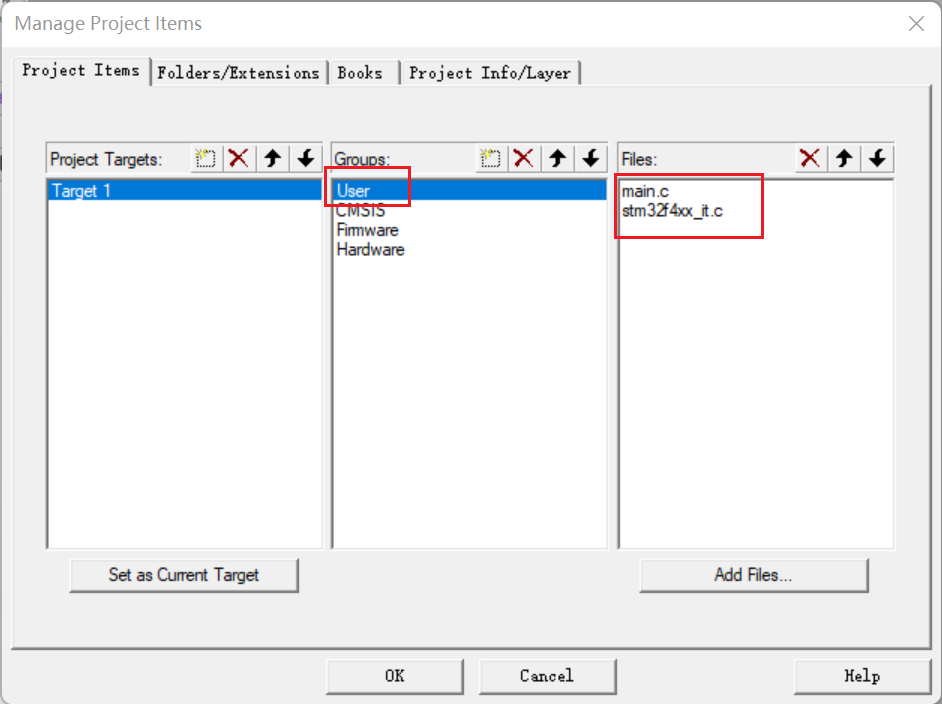</p><h4 data-lake-id="kozqY" id="kozqY"><span data-lake-id="u84dabbd4" id="u84dabbd4">CMSIS分组添加</span></h4><p data-lake-id="u46c448c9" id="u46c448c9"><strong><span data-lake-id="ue2fd6482" id="ue2fd6482">添加汇编.s启动文件</span></strong></p><p data-lake-id="u4717358b" id="u4717358b">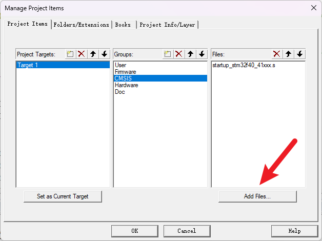</p><p data-lake-id="u6204e87a" id="u6204e87a"><span class="lake-fontsize-12" data-lake-id="ubcf4d06d" id="ubcf4d06d">来到</span><code data-lake-id="u5abf756e" id="u5abf756e"><span class="lake-fontsize-12" data-lake-id="u165a0817" id="u165a0817">Firmware\CMSIS\Device\ST\STM32F4xx\Source\Templates\arm</span></code><span class="lake-fontsize-12" data-lake-id="u48520895" id="u48520895">目录下，选择如下：</span></p><p data-lake-id="u873f3842" id="u873f3842">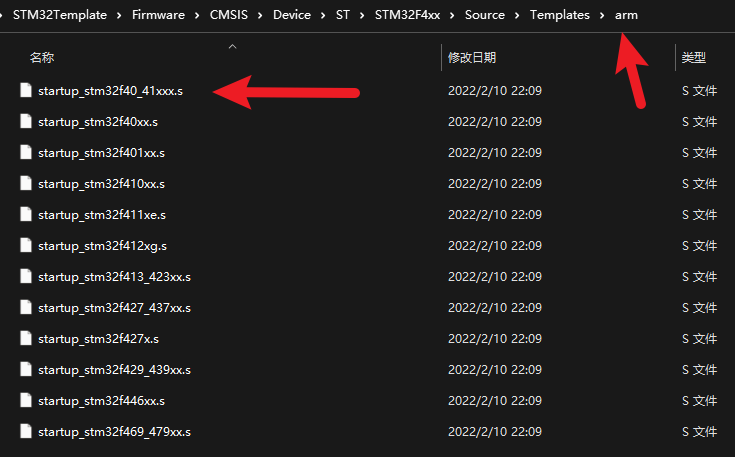</p><p data-lake-id="u03a5e1f2" id="u03a5e1f2"><strong><span data-lake-id="u76274577" id="u76274577">添加system系统初始化.c文件</span></strong></p><p data-lake-id="u1ae143a7" id="u1ae143a7"><code data-lake-id="u4b57c437" id="u4b57c437"><span data-lake-id="u2eef7366" id="u2eef7366">Firmware\CMSIS\Device\ST\STM32F4xx\Source\Templates\system_stm32f4xx.c</span></code></p><p data-lake-id="u960273ce" id="u960273ce">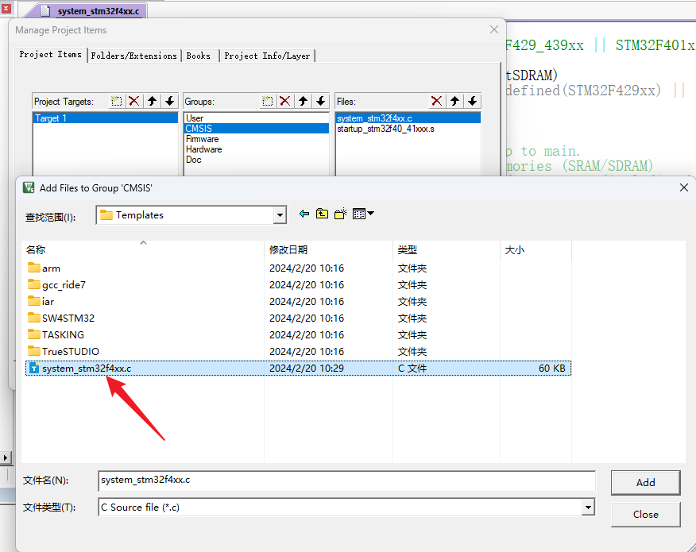</p><h4 data-lake-id="nbtls" id="nbtls"><span data-lake-id="u3eb1bc33" id="u3eb1bc33">Firmware分组添加</span></h4><p data-lake-id="u7646726e" id="u7646726e"><span class="lake-fontsize-12" data-lake-id="ua3c866ab" id="ua3c866ab">来到</span><code data-lake-id="u2936691b" id="u2936691b"><span class="lake-fontsize-12" data-lake-id="uf0ae0ea7" id="uf0ae0ea7">Firmware\STM32F4xx_StdPeriph_Driver\src</span></code><span class="lake-fontsize-12" data-lake-id="ub706ceed" id="ub706ceed">目录下，选择如下：</span></p><p data-lake-id="ub0aeecf4" id="ub0aeecf4">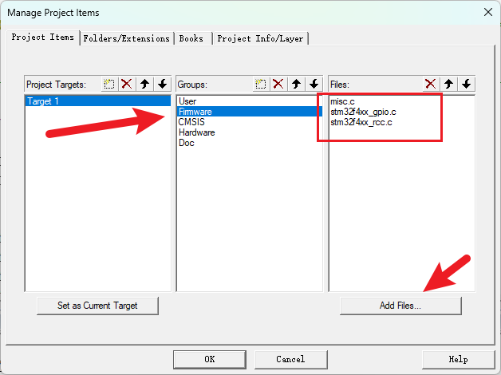</p><p data-lake-id="ue88ef5a9" id="ue88ef5a9"><br/></p><ul list="ue3201ec5"><li data-lake-id="u3e13f03d" fid="u2f7bc262" id="u3e13f03d"><span class="lake-fontsize-12" data-lake-id="u6f335c57" id="u6f335c57">stm32f4xx_rcc.c</span></li><li data-lake-id="u1faaef15" fid="u2f7bc262" id="u1faaef15"><span class="lake-fontsize-12" data-lake-id="u7e6263d4" id="u7e6263d4">stm32f4xx_gpio.c</span></li><li data-lake-id="u4e14734d" fid="u2f7bc262" id="u4e14734d"><span class="lake-fontsize-12" data-lake-id="u64dca258" id="u64dca258">misc.c</span></li></ul><h4 data-lake-id="nRcSB" id="nRcSB"><span data-lake-id="ub763e5e5" id="ub763e5e5">工程配置</span></h4><ol list="ue7e6bda3"><li data-lake-id="u241071b1" fid="uc77f5248" id="u241071b1"><span class="lake-fontsize-12" data-lake-id="u4bc6dd01" id="u4bc6dd01">Target配置</span></li></ol><p data-lake-id="u92905834" id="u92905834" style="padding-left: 2em">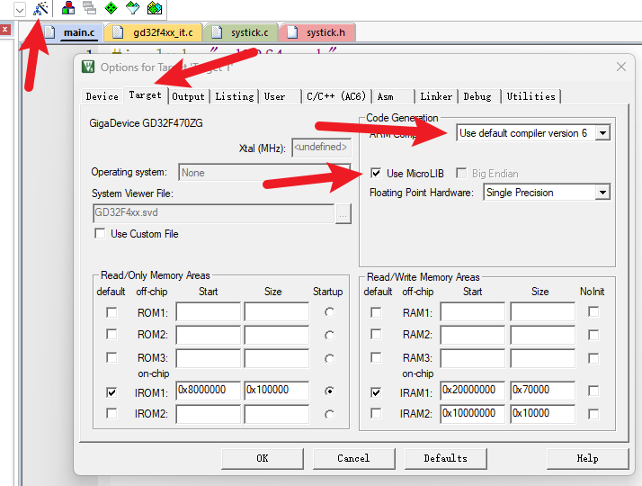</p><p data-lake-id="u40b1ca8f" id="u40b1ca8f" style="padding-left: 2em"><span data-lake-id="uab0bd18b" id="uab0bd18b">点击魔法棒，进入配置中的</span><code data-lake-id="ued601a45" id="ued601a45"><span data-lake-id="u4b0d80ab" id="u4b0d80ab">Target</span></code><span data-lake-id="u33f7b35a" id="u33f7b35a">，选择ARM compiler 为V6</span></p><p data-lake-id="u344bcb44" id="u344bcb44" style="padding-left: 2em"><span data-lake-id="ud71b8a66" id="ud71b8a66">勾选</span><code data-lake-id="u35aa0d30" id="u35aa0d30"><span data-lake-id="uc924411c" id="uc924411c">Use MicroLIB</span></code></p><ol list="ub6136696" start="2"><li data-lake-id="u91ff7200" fid="u4ce7f393" id="u91ff7200"><span data-lake-id="ue2dcfafe" id="ue2dcfafe">Output配置</span></li></ol><p data-lake-id="u2b81269f" id="u2b81269f" style="padding-left: 2em">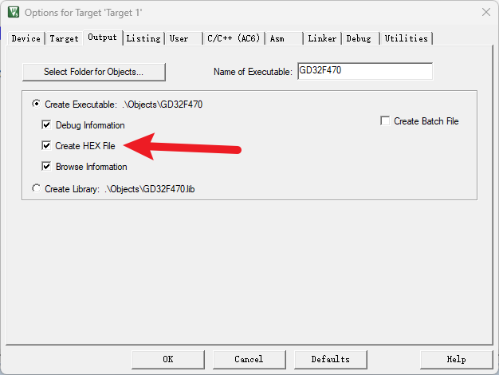</p><p data-lake-id="ueea8b584" id="ueea8b584" style="padding-left: 2em"><span data-lake-id="ub90540ae" id="ub90540ae">选择创建hex文件</span></p><ol list="u865b72a2" start="3"><li data-lake-id="u2c3bce3e" fid="u5433f65f" id="u2c3bce3e"><span data-lake-id="u748b4ab0" id="u748b4ab0">C/C++配置</span></li></ol><p data-lake-id="ua65200ff" id="ua65200ff" style="padding-left: 2em">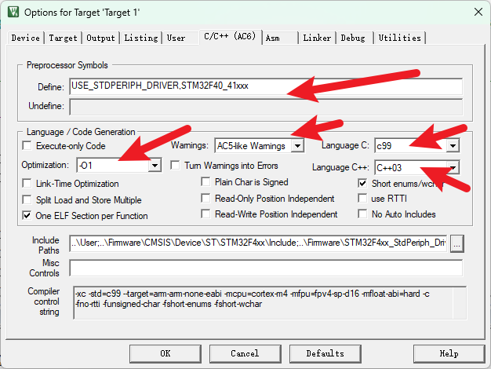</p><ul data-lake-indent="1" list="uc78bb70f"><li data-lake-id="u0b0502a0" fid="u79a0a34b" id="u0b0502a0"><span data-lake-id="u1cef3b14" id="u1cef3b14">Define配置为：</span><code data-lake-id="uf28badca" id="uf28badca"><span data-lake-id="u5dae02ef" id="u5dae02ef">USE_STDPERIPH_DRIVER,STM32F40_41xxx</span></code></li><li data-lake-id="u42cce050" fid="u79a0a34b" id="u42cce050"><span data-lake-id="u0df4c810" id="u0df4c810">Warings选择</span><code data-lake-id="u177accca" id="u177accca"><span data-lake-id="ub14db846" id="ub14db846">AC5-like warnings</span></code></li><li data-lake-id="uabd5573c" fid="u79a0a34b" id="uabd5573c"><span data-lake-id="u3409f01b" id="u3409f01b">选择</span><code data-lake-id="u9920fd69" id="u9920fd69"><span data-lake-id="ua330e05b" id="ua330e05b">c99</span></code><span data-lake-id="u5d4e3bd7" id="u5d4e3bd7">和</span><code data-lake-id="u11f37052" id="u11f37052"><span data-lake-id="u0e0f50df" id="u0e0f50df">c++03</span></code></li><li data-lake-id="u6a566a79" fid="u79a0a34b" id="u6a566a79"><span data-lake-id="u5b2818ce" id="u5b2818ce">Optimization选择</span><code data-lake-id="u2a36ee77" id="u2a36ee77"><span data-lake-id="u0ad2e803" id="u0ad2e803">-O1</span></code></li></ul><ol list="u56cc37ba" start="4"><li data-lake-id="u0775f84c" fid="u50f993c2" id="u0775f84c"><span data-lake-id="u2c42bc0e" id="u2c42bc0e">Include配置</span></li></ol><p data-lake-id="u54114950" id="u54114950" style="padding-left: 2em">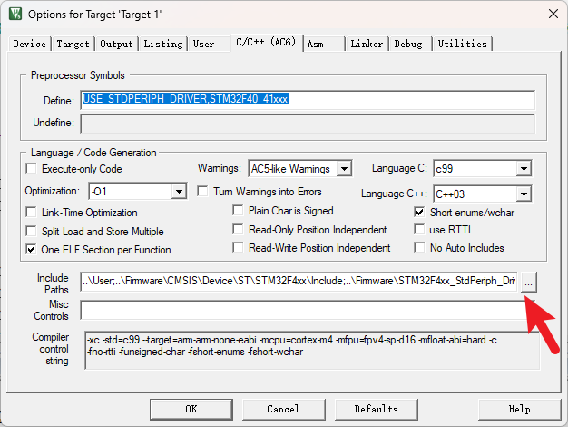</p><p data-lake-id="ue046cfd6" id="ue046cfd6" style="padding-left: 2em">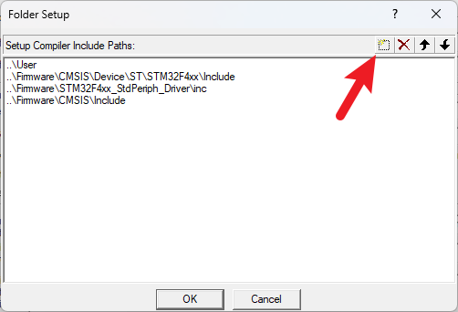</p><p data-lake-id="u80a37d2a" id="u80a37d2a" style="padding-left: 2em"><span data-lake-id="uda9d1906" id="uda9d1906">添加如下几个目录：</span></p><ul list="u399e6a1a"><li data-lake-id="u5eb2ed59" fid="u0a4e107c" id="u5eb2ed59"><code data-lake-id="u5568d16b" id="u5568d16b"><span data-lake-id="u62a61969" id="u62a61969">User</span></code></li><li data-lake-id="ufae30975" fid="u0a4e107c" id="ufae30975"><code data-lake-id="u4253f4c0" id="u4253f4c0"><span data-lake-id="ue3c24c3f" id="ue3c24c3f">Firmware\CMSIS\Device\ST\STM32F4xx\Include</span></code></li><li data-lake-id="uacd4d5bb" fid="u0a4e107c" id="uacd4d5bb"><code data-lake-id="u53ee0254" id="u53ee0254"><span data-lake-id="u42ad2400" id="u42ad2400">Firmware\CMSIS\Include</span></code></li><li data-lake-id="u3566619f" fid="u0a4e107c" id="u3566619f"><code data-lake-id="u78e56ddb" id="u78e56ddb"><span data-lake-id="uef3e4b6d" id="uef3e4b6d">Firmware\STM32F4xx_StdPeriph_Driver\inc</span></code></li></ul><p data-lake-id="u4552114e" id="u4552114e"><br/></p><h4 data-lake-id="Jq3Hs" id="Jq3Hs"><span data-lake-id="u928f9b6e" id="u928f9b6e">系统时钟修改</span></h4><ol list="u1382fac9"><li data-lake-id="ud91cf78b" fid="u382c88a6" id="ud91cf78b"><span class="lake-fontsize-12" data-lake-id="u707bdd4d" id="u707bdd4d">将</span><code data-lake-id="u0aea0118" id="u0aea0118"><span class="lake-fontsize-12" data-lake-id="u991aa379" id="u991aa379">system_stm32f4xx.c</span></code><span class="lake-fontsize-12" data-lake-id="u83d816fc" id="u83d816fc">的</span><code data-lake-id="u73f843c6" id="u73f843c6"><span class="lake-fontsize-12" data-lake-id="uc909e3fb" id="uc909e3fb">PLL_M</span></code><span class="lake-fontsize-12" data-lake-id="u9f04d804" id="u9f04d804">内容改为</span><code data-lake-id="u915520d8" id="u915520d8"><span class="lake-fontsize-12" data-lake-id="u4e984eba" id="u4e984eba">8</span></code></li></ol><p data-lake-id="u4e273e73" id="u4e273e73">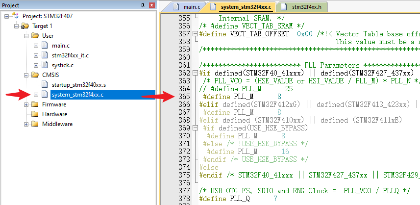</p><ol list="uc3a938ce" start="2"><li data-lake-id="u08641870" fid="u72acdcd7" id="u08641870"><span data-lake-id="u97352463" id="u97352463">将</span><code data-lake-id="uab91b284" id="uab91b284"><span data-lake-id="u1b8b4d3b" id="u1b8b4d3b">stm32f4xx.h</span></code><span data-lake-id="u9842a41a" id="u9842a41a">的</span><code data-lake-id="uaacfb6bc" id="uaacfb6bc"><span data-lake-id="ud274e440" id="ud274e440">HSE_VALUE</span></code><span data-lake-id="u4765b4a7" id="u4765b4a7">内容修改为</span><code data-lake-id="u7a7c855b" id="u7a7c855b"><span data-lake-id="u5e33382e" id="u5e33382e">((uint32_t)8000000)</span></code></li></ol><p data-lake-id="ue8f64350" id="ue8f64350">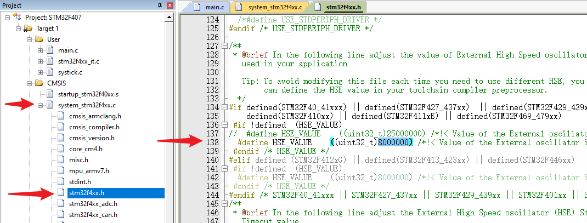</p><h4 data-lake-id="OpYGU" id="OpYGU"><span data-lake-id="u14cdf0e2" id="u14cdf0e2">增加延时函数</span></h4><p data-lake-id="uaa11ca8d" id="uaa11ca8d"><span data-lake-id="uc7029d4c" id="uc7029d4c">在User中增加</span><code data-lake-id="u324489e2" id="u324489e2"><span data-lake-id="u817639dd" id="u817639dd">systick.h</span></code><span data-lake-id="u94536cf6" id="u94536cf6">和</span><code data-lake-id="u66384d00" id="u66384d00"><span data-lake-id="u38428cfa" id="u38428cfa">systick.c</span></code></p><span class="yuque-card-unsupported">[codeblock]</span><span class="yuque-card-unsupported">[codeblock]</span><p data-lake-id="uf8bf0615" id="uf8bf0615"><br/></p><h4 data-lake-id="Rggoo" id="Rggoo"><span data-lake-id="u41df644f" id="u41df644f">程序代码修改</span></h4><p data-lake-id="u183bd341" id="u183bd341"><span class="lake-fontsize-12" data-lake-id="u98be4373" id="u98be4373" style="color: rgb(51, 51, 51)">打开 main.c 文件，删除一些不必要的代码，剩余部分如图：</span></p><p data-lake-id="ua9680d9a" id="ua9680d9a">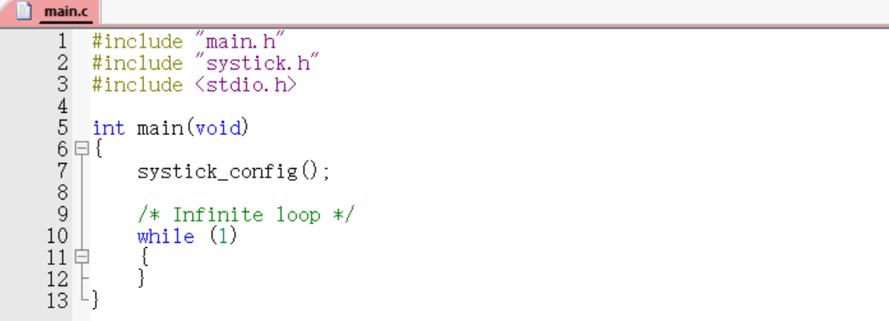</p><p data-lake-id="u783258c1" id="u783258c1"><span class="lake-fontsize-12" data-lake-id="uba87602d" id="uba87602d" style="color: rgb(51, 51, 51)">打开 stm32f4xx_it.c 文件，拉到最后面，然后删掉 Systick_Handler 下面的代码，</span><strong><span class="lake-fontsize-12" data-lake-id="u5dcdeb62" id="u5dcdeb62" style="color: rgb(51, 51, 51)">剩余部分</span></strong><span class="lake-fontsize-12" data-lake-id="u15a28040" id="u15a28040" style="color: rgb(51, 51, 51)">如图：</span></p><p data-lake-id="u62579f50" id="u62579f50">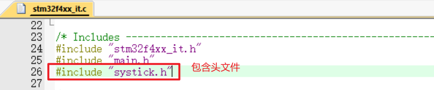</p><p data-lake-id="ud1522296" id="ud1522296">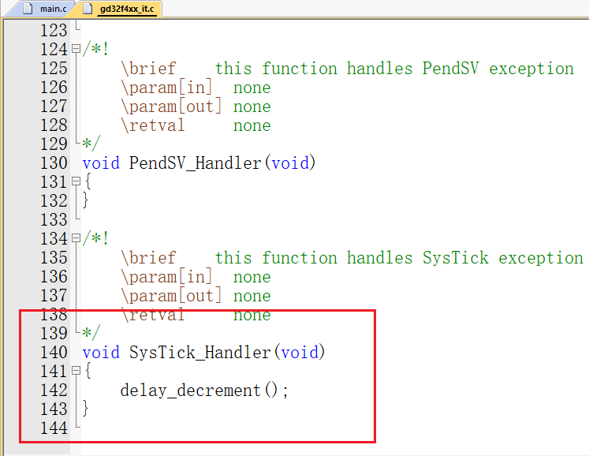</p><p data-lake-id="u6538e0ae" id="u6538e0ae"><br/></p><h4 data-lake-id="BbwOp" id="BbwOp"><span data-lake-id="ub55dc01b" id="ub55dc01b">编译错误</span></h4><p data-lake-id="uc92fdc7c" id="uc92fdc7c"><span data-lake-id="ua1ffc5ed" id="ua1ffc5ed">通常在编译过程中会报错，是由于当前CMSIS接口定义不符合AC6的编译环境，我们需要覆盖掉CMISIS的编译头文件。</span></p><p data-lake-id="u35395309" id="u35395309"><span data-lake-id="u0dd4f6dc" id="u0dd4f6dc">首先，删除</span><code data-lake-id="ud6486e60" id="ud6486e60"><span data-lake-id="u4e68e768" id="u4e68e768">Firmware\CMSIS\Include</span></code><span data-lake-id="u11faf1f8" id="u11faf1f8">中所有的头文件。</span></p><p data-lake-id="u0baf7a48" id="u0baf7a48"><span data-lake-id="u48785e49" id="u48785e49">然后，找到你的Pack安装目录，查找方式如下：</span></p><p data-lake-id="u64ab27dd" id="u64ab27dd">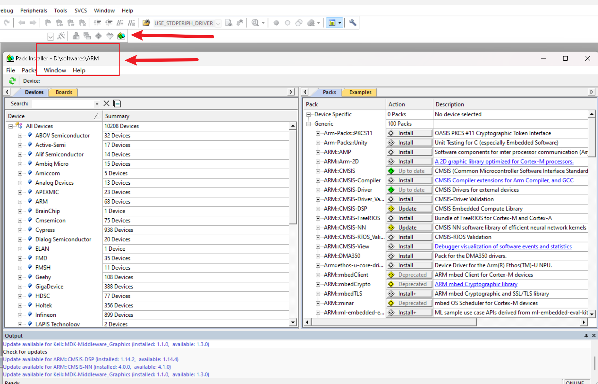</p><p data-lake-id="u28471a16" id="u28471a16"><span data-lake-id="u06419ded" id="u06419ded">来到这个目录中的</span><code data-lake-id="u6a443210" id="u6a443210"><span data-lake-id="u746d8895" id="u746d8895">Packs\ARM\CMSIS\5.9.0\CMSIS\Core\Include</span></code><span data-lake-id="u8639b09a" id="u8639b09a">中：</span></p><p data-lake-id="u154f4114" id="u154f4114">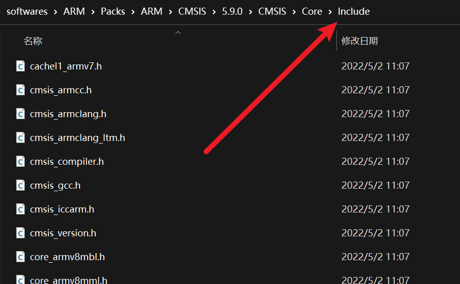</p><p data-lake-id="u8664eea4" id="u8664eea4"><span data-lake-id="u24a61aa4" id="u24a61aa4">拷贝这个目录中所有的</span><code data-lake-id="u0def6985" id="u0def6985"><span data-lake-id="u2fe2ddb4" id="u2fe2ddb4">.h</span></code><span data-lake-id="u0d93e052" id="u0d93e052">文件，拷贝到你的项目目录的</span><code data-lake-id="u6693aba0" id="u6693aba0"><span data-lake-id="u5331ac82" id="u5331ac82">Firmware/CMSIS/Include</span></code><span data-lake-id="ucbcaf2ac" id="ucbcaf2ac">目录中</span></p><p data-lake-id="u966c4998" id="u966c4998"><span data-lake-id="ua32b61b5" id="ua32b61b5">​</span><br/></p><h4 data-lake-id="jyo2E" id="jyo2E"><span data-lake-id="u6f47f7d3" id="u6f47f7d3">警告解除</span></h4><p data-lake-id="ud4350f0d" id="ud4350f0d">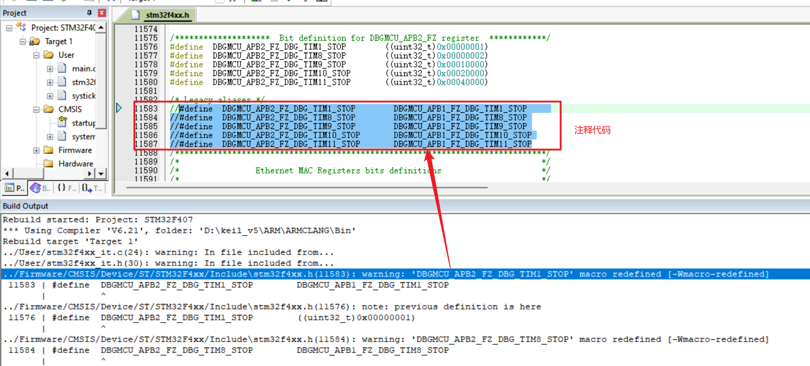</p><p data-lake-id="u6348c911" id="u6348c911">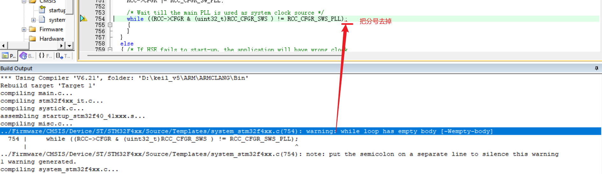</p><h2 data-lake-id="wv8xb" id="wv8xb"><span data-lake-id="u758e0a4f" id="u758e0a4f">练习题</span></h2><ol list="u9e64ab65"><li data-lake-id="ubb3f598d" fid="u3082cfd1" id="ubb3f598d"><span data-lake-id="ud819dae0" id="ud819dae0">按照流程搭建项目模板</span></li></ol><p data-lake-id="u10186f14" id="u10186f14"><br/></p><p data-lake-id="uf8dc9e40" id="uf8dc9e40"><br/></p><p data-lake-id="u7575b47c" id="u7575b47c"><span data-lake-id="ub33f0cf7" id="ub33f0cf7">​</span><br/></p>